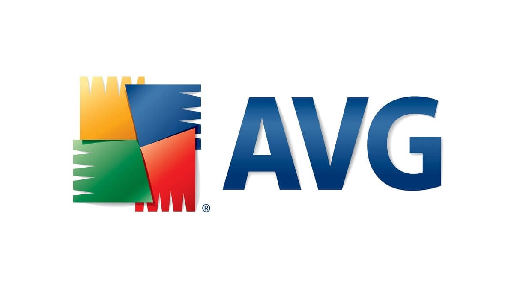

AVG Antivirus

AVG AntiVirus (AVG, siglas de AntiVirus Guard) es un software antivirus desarrollado por AVG Technologies, una empresa checa, disponible
para sistemas operativos Windows, Linux, Android, iOS y Windows Phone, entre otros. A la fecha de este artículo,
todas las versiones de este software de antivirus son propiedad de Avast Software desde Octubre del 2016.
Aqui realizaremos la instalacion de AVG Antivirus en Windows 10
Lo que primero haremos es ir a la pagina Web oficial de AVG

Ahora le damos a Descarga Gratuita

Le damos a Instalar

Esperamos a que se instale

Le damos a Continuar

Seleccionamos Continuar con Free

Ejecutamos el Primer Analisis

Esperamos a que termine

Como se puede apreciar tenemos las siguientes funcionalidades:
- Equipo
- Web y Correo Electronico
Luego no tenemos disponibles las siguientes funciones (porque son del paquete premium):
- Ataques de Hackers
- Privacidad
- Pagos

Como se puede apreciar en la pestaña Equipo tenemos las siguientes funcionalidades:
- Escudo de Archivos
- Escudo de Comportamiento
- Proteccion contra Ramsonware
- Inspector de Red

Como se puede apreciar en la pestaña Web y Correo Electronico tenemos las siguientes funcionalidades:
- Escudo Web
- Escudo de Correo Electronico
- Cortafuegos mejorado
- Alertos de Hackeo

Si le damos a los tres puntos que estan al lado del boton "Ejecutar Analisis Inteligente" dispondremos de mas opciones de analisis:
- Analisis Exhaustivo
- Analisis de carpetas y archivos
- Analisis durante el arranque
- Analisis de USB/DVD
- Analisis Programados
- Historial de Analisis